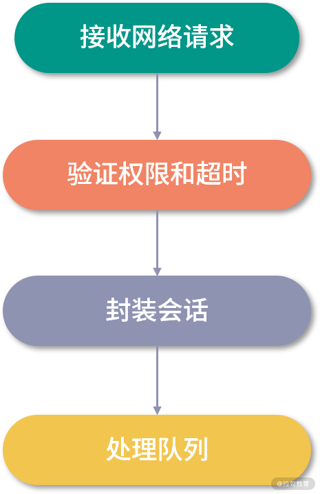
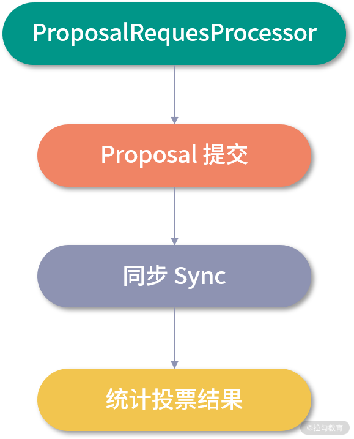
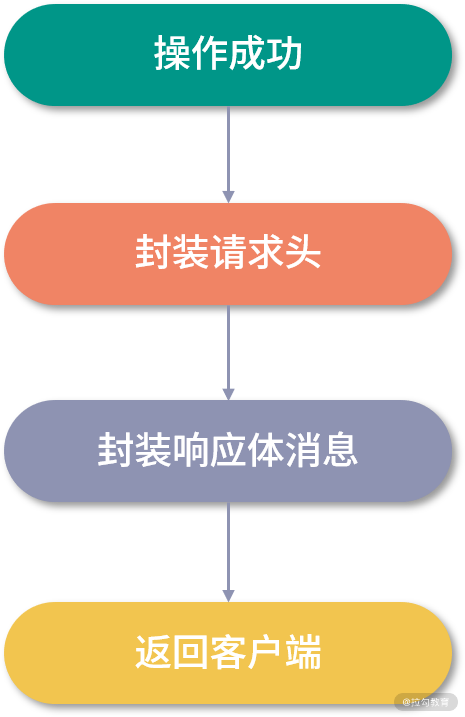

- 00 开篇词：选择 ZooKeeper，一步到位掌握分布式开发.md.html
- 01 ZooKeeper 数据模型：节点的特性与应用.md.html
- 02 发布订阅模式：如何使用 Watch 机制实现分布式通知.md.html
- 03 ACL 权限控制：如何避免未经授权的访问？.md.html
- 04 ZooKeeper 如何进行序列化？.md.html
- 05 深入分析 Jute 的底层实现原理.md.html
- 06 ZooKeeper 的网络通信协议详解.md.html
- 07 单机模式：服务器如何从初始化到对外提供服务？.md.html
- 08 集群模式：服务器如何从初始化到对外提供服务？.md.html
- 09 创建会话：避开日常开发的那些“坑”.md.html
- 10 ClientCnxn：客户端核心工作类工作原理解析.md.html
- 11 分桶策略：如何实现高效的会话管理？.md.html
- 12 服务端是如何处理一次会话请求的？.md.html
- 13 Curator：如何降低 ZooKeeper 使用的复杂性？.md.html
- 14 Leader 选举：如何保证分布式数据的一致性？.md.html
- 15 ZooKeeper 究竟是怎么选中 Leader 的？.md.html
- 16 ZooKeeper 集群中 Leader 与 Follower 的数据同步策略.md.html
- 17 集群中 Leader 的作用：事务的请求处理与调度分析.md.html
- 18 集群中 Follow 的作用：非事务请求的处理与 Leader 的选举分析.md.html
- 19 Observer 的作用与 Follow 有哪些不同？.md.html
- 20 一个运行中的 ZooKeeper 服务会产生哪些数据和文件？.md.html
- 21 ZooKeeper 分布式锁：实现和原理解析.md.html
- 22 基于 ZooKeeper 命名服务的应用：分布式 ID 生成器.md.html
- 23 使用 ZooKeeper 实现负载均衡服务器功能.md.html
- 24 ZooKeeper 在 Kafka 和 Dubbo 中的工业级实现案例分析.md.html
- 25 如何搭建一个高可用的 ZooKeeper 生产环境？.md.html
- 26 JConsole 与四字母命令：如何监控服务器上 ZooKeeper 的运行状态？.md.html
- 27 crontab 与 PurgeTxnLog：线上系统日志清理的最佳时间和方式.md.html
- 28 彻底掌握二阶段提交三阶段提交算法原理.md.html
- 29 ZAB 协议算法：崩溃恢复和消息广播.md.html
- 30 ZAB 与 Paxos 算法的联系与区别.md.html
- 31 ZooKeeper 中二阶段提交算法的实现分析.md.html
- 32 ZooKeeper 数据存储底层实现解析.md.html
- 33 结束语 分布技术发展与 ZooKeeper 应用前景.md.html
- 捐赠
17 集群中 Leader 的作用：事务的请求处理与调度分析
本课时主要学习 Leader 在集群中的作用以及实现原理，在前面的课程中我们一直围绕 ZooKeeper 集群的功能来研究其底层实现原理，今天这节课我们还是围绕这个主题来进一步探究 Leader 服务器在 ZooKeeper 中的作用，即处理事务性的会话请求以及管理 ZooKeeper 集群中的其他角色服务器。而在接收到来自客户端的事务性会话请求后，ZooKeeper 集群内部又
是如何判断会话的请求类型，以及转发处理事务性请求的呢？带着这些问题我们继续本节课的学习。
事务性请求处理
在 ZooKeeper 集群接收到来自客户端的会话请求操作后，首先会判断该条请求是否是事务性的会话请求。对于事务性的会话请求，ZooKeeper 集群服务端会将该请求统一转发给 Leader 服务器进行操作。通过前面我们讲过的，Leader 服务器内部执行该条事务性的会话请求后，再将数据同步给其他角色服务器，从而保证事务性会话请求的执行顺序，进而保证整个 ZooKeeper 集群的数据一致性。
在 ZooKeeper 集群的内部实现中，是通过什么方法保证所有 ZooKeeper 集群接收到的事务性会话请求都能交给 Leader 服务器进行处理的呢？下面我们就带着这个问题继续学习。
在 ZooKeeper 集群内部，集群中除 Leader 服务器外的其他角色服务器接收到来自客户端的事务性会话请求后，必须将该条会话请求转发给 Leader 服务器进行处理。 ZooKeeper 集群中的 Follow 和 Observer 服务器，都会检查当前接收到的会话请求是否是事务性的请求，如果是事务性的请求，那么就将该请求以 REQUEST 消息类型转发给 Leader 服务器。
在 ZooKeeper集群中的服务器接收到该条消息后，会对该条消息进行解析。分析出该条消息所包含的原始客户端会话请求。之后将该条消息提交到自己的 Leader 服务器请求处理链中，开始进行事务性的会话请求操作。如果不是事务性请求，ZooKeeper 集群则交由 Follow 和 Observer 角色服务器处理该条会话请求，如查询数据节点信息。
Leader 事务处理分析
上面我们介绍了 ZooKeeper 集群在处理事务性会话请求时的内部原理。接下来我们就以客户端发起的创建节点请求 setData 为例，具体看看 ZooKeeper 集群的底层处理过程。
在 ZooKeeper 集群接收到来自客户端的一个 setData 会话请求后，其内部的处理逻辑基本可以分成四个部分。如下图所示，分别是预处理阶段、事务处理阶段、事务执行阶段、响应客户端。
预处理阶段：
在预处理阶段，主要工作是通过网络 I/O 接收来自客户端的会话请求。判断该条会话请求的类型是否是事务性的会话请求，之后将该请求提交给
PrepRequestProcessor 处理器进行处理。封装请求事务头并检查会话是否过期，最后反序列化事务请求信息创建 setDataRequest 请求，在 setDataRequest 记录中包含了要创建数据的节点的路径、数据节点的内容信息以及数据节点的版本信息。最后将该请求存放在 outstandingChanges 队列中等待之后的处理。

事务处理阶段：
在事务处理阶段，ZooKeeper 集群内部会将该条会话请求提交给 ProposalRequestProcessor 处理器进行处理。本阶段内部又分为提交、同步、统计三个步骤。其具体的处理过程我们在之前的课程中已经介绍过了，这里不再赘述。

事务执行阶段：
在经过预处理阶段和事务会话的投票发起等操作后，一个事务性的会话请求都已经准备好了，接下来就是在 ZooKeeper 的数据库中执行该条会话的数据变更操作。
在处理数据变更的过程中，ZooKeeper 内部会将该请求会话的事务头和事务体信息直接交给内存数据库 ZKDatabase 进行事务性的持久化操作。之后返回 ProcessTxnResult 对象表明操作结果是否成功。
响应客户端：
在 ZooKeeper 集群处理完客户端 setData 方法发送的数据节点创建请求后，会将处理结果发送给客户端。而在响应客户端的过程中，ZooKeeper 内部首先会创建一个 setDataResponse 响应体类型，该对象主要包括当前会话请求所创建的数据节点，以及其最新状态字段信息 stat。之后创建请求响应头信息，响应头作为客户端请求响应的重要信息，客户端在接收到 ZooKeeper 集群的响应后，通过解析响应头信息中的事务 ZXID 和请求结果标识符 err 来判断该条会话请求是否成功执行。

事务处理底层实现
介绍完 ZooKeeper 集群处理事务性会话请求的理论方法和内部过程后。接下来我们从代码层面来进一步分析 ZooKeeper 在处理事务性请求时的底层核心代码实现。
首先，ZooKeeper 集群在收到客户端发送的事务性会话请求后，会对该请求进行预处理。在代码层面，ZooKeeper 通过调用 PrepRequestProcessor 类来实现预处理阶段的全部逻辑。可以这样理解：在处理客户端会话请求的时候，首先调用的就是 PrepRequestProcessor 类。而在 PrepRequestProcessor 内部，是通过 pRequest 方法判断客户端发送的会话请求类型。如果是诸如 setData 数据节点创建等事务性的会话请求，就调用 pRequest2Txn 方法进一步处理。
protected void pRequest(Request request){
...
switch (request.type) {
case OpCode.setData:
SetDataRequest setDataRequest = new SetDataRequest();
pRequest2Txn(request.type, zks.getNextZxid(), request, setDataRequest, true);
break;
}
}
而在 pRequest2Txn 方法的内部，就实现了预处理阶段的主要逻辑。如下面的代码所示，首先通过 checkSession 方法检查该条会话请求是否有效（比如会话是否过期等），之后调用 checkACL 检查发起会话操作的客户端在 ZooKeeper 服务端是否具有相关操作的权限。最后将该条会话创建的相关信息，诸如 path 节点路径、data 节点数据信息、version 节点版本信息等字段封装成 setDataRequest 类型并传入到 setTxn 方法中，最后加入处理链中进行处理。
case OpCode.setData:
zks.sessionTracker.checkSession(request.sessionId, request.getOwner());
SetDataRequest setDataRequest = (SetDataRequest)record;
if(deserialize)
ByteBufferInputStream.byteBuffer2Record(request.request, setDataRequest);
path = setDataRequest.getPath();
validatePath(path, request.sessionId);
nodeRecord = getRecordForPath(path);
checkACL(zks, request.cnxn, nodeRecord.acl, ZooDefs.Perms.WRITE, request.authInfo, path, null);
int newVersion = checkAndIncVersion(nodeRecord.stat.getVersion(), setDataRequest.getVersion(), path);
request.setTxn(new SetDataTxn(path, setDataRequest.getData(), newVersion));
nodeRecord = nodeRecord.duplicate(request.getHdr().getZxid());
nodeRecord.stat.setVersion(newVersion);
addChangeRecord(nodeRecord);
结束
在本课时中，我们主要学习了 ZooKeeper 集群中 Leader 服务器是如何处理事务性的会话请求的，并且在处理完事务性的会话请求后，是如何通知其他角色服务器进行同步操作的。
可以说在 ZooKeeper 集群处理事务性的请过程中，Follow 和 Observer 服务器主要负责接收客户端的会话请求，并转发给 Leader 服务器。而真正处理该条会话请求的是 Leader 服务器。
这就会引发一个问题：当一个业务场景在查询操作多而创建删除等事务性操作少的情况下，ZooKeeper 集群的性能表现的就会很好。而如果是在极端情况下，ZooKeeper 集群只有事务性的会话请求而没有查询操作，那么 Follow 和 Observer 服务器就只能充当一个请求转发服务器的角色， 所有的会话的处理压力都在 Leader 服务器。在处理性能上整个集群服务器的瓶颈取决于 Leader 服务器的性能。ZooKeeper 集群的作用只能保证在 Leader 节点崩溃的时候，重新选举出 Leader 服务器保证系统的稳定性。这也是 ZooKeeper 设计的一个缺点。
© 2019 - 2023 Liangliang Lee. Powered by gin and hexo-theme-book.